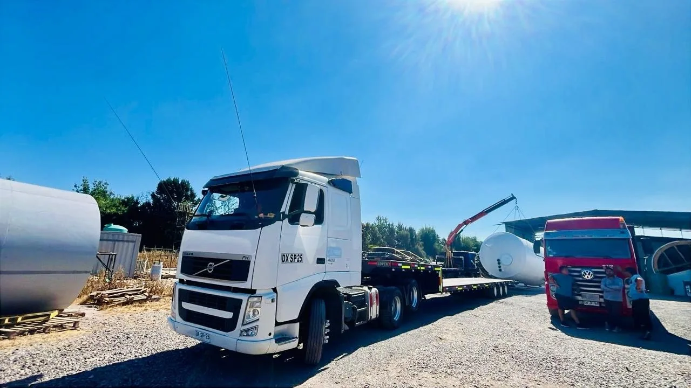
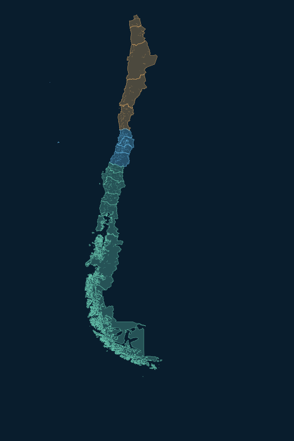
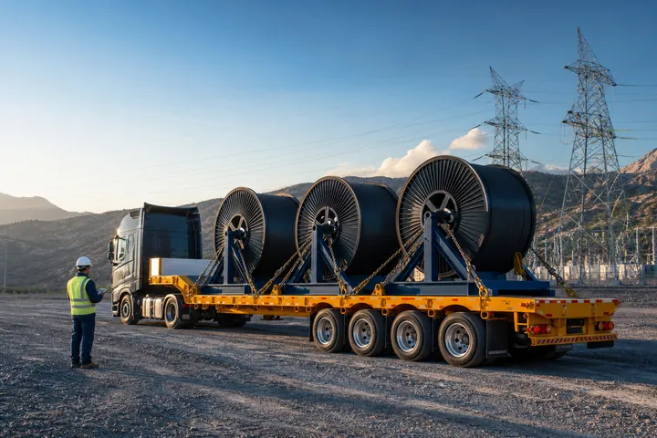
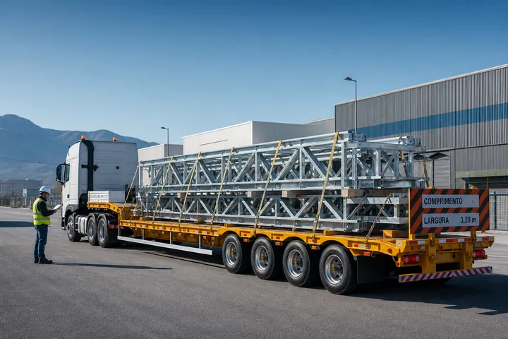

Carga general
Mercadería, insumos y carga industrial. Una solución coordinada de origen a destino.
Conocer solución
Transporte de carga, maquinaria y proyectos especiales. Planificamos cada detalle para conectar tu operación con su próximo destino.
La planificación se convierte en movimiento.
Prepara tu solicitud y envíala al área comercial por WhatsApp. Sin compromiso.


Entendemos lo que hay detrás de cada traslado: un proyecto que avanza, una empresa que produce, un compromiso que cumplir.
Integramos recursos propios y una red operacional seleccionada para estructurar una solución ajustada a tu carga, ruta y plazos.
Conoce a tu partner logísticoEvaluamos la carga antes de definir la solución.
Conectamos personas, equipos y condiciones.
Un equipo comercial para acompañar tu requerimiento.
Mercadería, insumos y carga industrial. Una solución coordinada de origen a destino.
Conocer soluciónTraslados para industria y construcción, con evaluación de dimensiones, accesos y equipos.
Conocer soluciónPlanificación y coordinación para cargas que requieren una solución particular.
Conocer soluciónConfiguración para maquinaria y cargas exigentes, según la factibilidad de cada operación.
Conocer soluciónCoordinación terrestre entre terminales, instalaciones industriales y el destino de tu carga.
Conocer soluciónEvaluamos cargas de menor volumen y alternativas de consolidación según ruta y disponibilidad.
Conocer soluciónExplora el territorio, identifica entornos industriales y proyecta tu traslado sobre la red vial.

Vista cartográfica 2D. La vista 3D requiere WebGL y conexión con el proveedor de mapas.
Los puntos industriales son referencias del territorio, no clientes ni operaciones declaradas de FACAI. Cada traslado se evalúa antes de confirmar su viabilidad.
Una operación bien resuelta comienza mucho antes de poner la carga en movimiento.
Tipo de carga, dimensiones, origen, destino y requerimientos de tu proyecto.
Ruta, equipo y recursos, con revisión de la viabilidad de la operación.
Retiro, entrega, participantes y autorizaciones cuando correspondan.
Transporte, comunicación de hitos y respaldo documental de la entrega.




Energía · Infraestructura hídrica · Industria · Construcción
Explorar nuestra experienciaProyectamos un espacio FACAI que acerque la información, los documentos y la coordinación de tus traslados.
Explora esta vista conceptual. El portal todavía no está habilitado; los datos son ilustrativos y las funciones definitivas se comunicarán en su lanzamiento.
La próxima etapa de FACAIUn vistazo al futuro. Selecciona Resumen, Operaciones o Documentos.
Tipo de carga, origen, destino y fecha estimada. El peso, las dimensiones, la cantidad de bultos y las condiciones de retiro y entrega permiten evaluar la alternativa adecuada.
Sí. Envíanos lo que ya conoces. Te indicaremos qué antecedentes faltan para evaluar la viabilidad y preparar una propuesta.
Según la operación, evaluamos camioneta, camión 3/4, rampla, extensible y cama baja. Combinamos recursos propios y una red operacional seleccionada; la configuración y disponibilidad se confirman caso a caso.
Evaluamos requerimientos a nivel nacional. Confirmamos cada ruta según origen, destino, carga, accesos y recursos disponibles; esto no implica contar con sucursales en todas las regiones.
Una ruta, un proyecto o una necesidad por resolver. Empecemos por ahí.